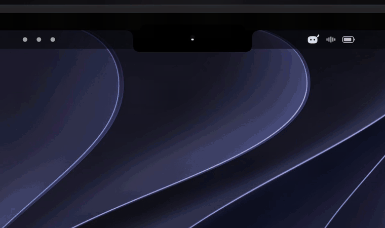
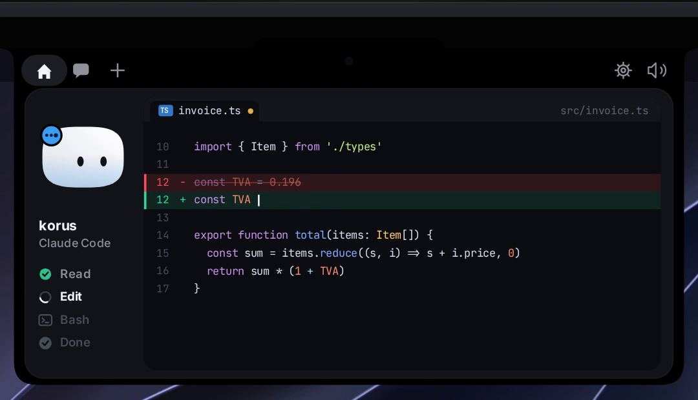
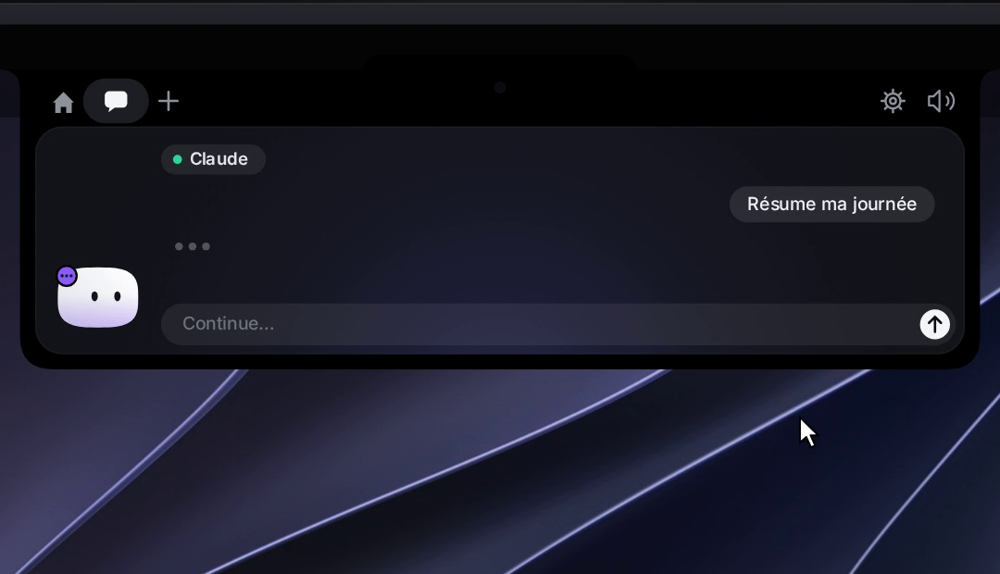
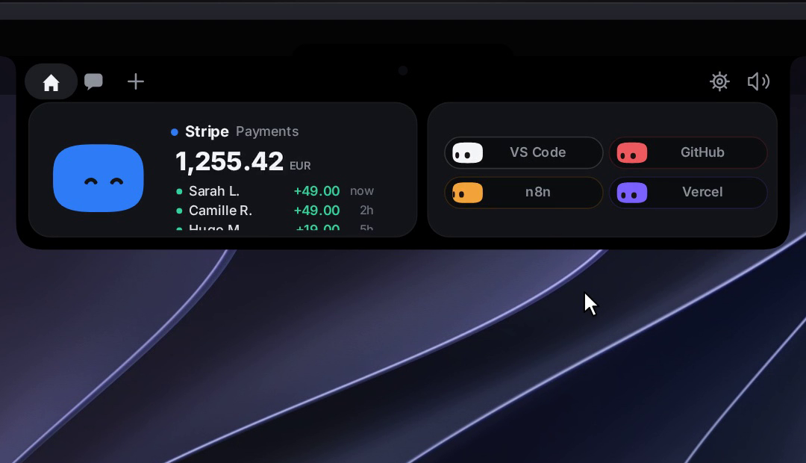

Native Mac app
A companion that lives in the notch
Viona sits in the MacBook notch and shows the work already happening on your Mac: a Claude Code session, a permission waiting for you, or a mailbox you chose to connect. It is a local app. It does not ask you to create an account.
Privacy policy View the source
What you can do with it
Watch a coding session
Claude Code sessions show up in the notch: the project, the current step, and a request that needs a yes or a no.
Answer from the notch
Approve or refuse a permission, answer a question, or drop a file on the notch to ask about it. Sending a file by email still happens in your own Mail app, after you click.
Read accounts you connect
Stripe, GitHub, Vercel, Resend, Notion, Cal.com and n8n are optional. Viona reads them with the keys you save in the Keychain, and only to show them to you.
Read Gmail on your Mac
Connect one or more Google accounts and Viona reads those mailboxes from your Mac, so the notch can show what arrived. Access is read-only. Viona does not send Gmail for you.


